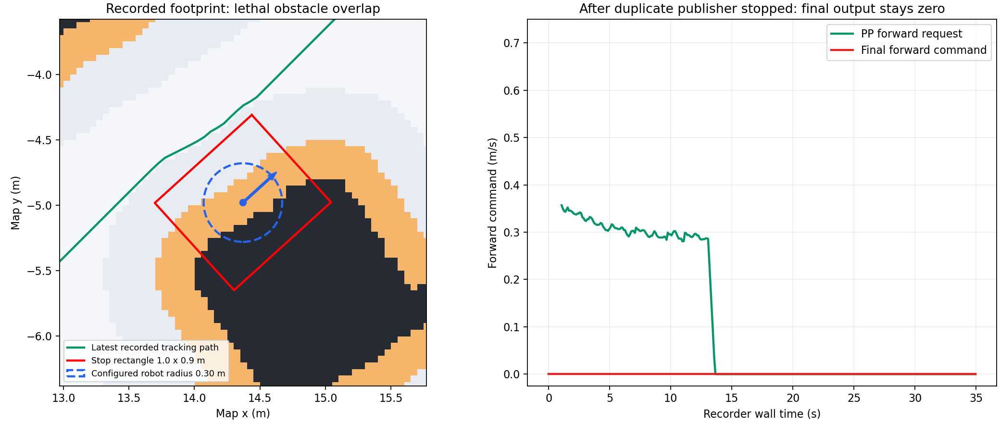

장애물 앞에서 멈춘 이유와 복귀 기능의 범위
별도 테스트용 /cmd_vel 발행은 사용자가 종료했다. 이후 추가 관측에서는 충돌 검사로 최종 명령이 0이 되었다. DWB로 컨트롤러만 바꿔도 같은 최종 충돌 검사가 적용된다.
실측 결과
| 관측 구간 | 확인한 사실 | 해석의 한계 |
|---|---|---|
| 첫 40초 | /cmd_vel 1,600개 중 800개가 별도 20 Hz 직진 명령(0.5 m/s, yaw 0). Navigation과 동시에 발행. | 순수 컨트롤러 성능 평가에 사용할 수 없다. 센서 수신이 없는 초기 구간도 포함된다. |
| 종료 직후 40초 | 발행자 1개 확인. empty_path/대기 후 마지막 약 5초에 추종 재개. | 조이스틱 이동 축 입력이 227개 관측되어 자동 주행 전후 성능 비교에서는 제외한다. |
| 다음 35초 | 발행자 1개, 이동 축 조이스틱 입력 0개. 최종 속도 700개 모두 0. 상태 메시지 66개 중 costmap_collision 57개. | 57/66은 상태 메시지 개수이며 정확한 시간 비율이 아니다. 이 구간은 주행 성능보다 정지 원인을 보여 준다. |
기존 지도와 충돌 영역을 겹쳐 본 결과

왼쪽: 검정은 lethal 장애물, 주황은 cost 253 영역, 빨강은 1.0 × 0.9 m 정지 사각형, 파란 점선은 설정된 0.30 m 로봇 반경, 초록은 마지막 기록 경로다. 오른쪽은 별도 35초 기록의 전진 명령이다. 지도 스냅샷과 명령 그래프는 서로 다른 시각이며, 경로는 스냅샷 이전 마지막 유효 경로를 참고로 표시했다.
스냅샷 map 위치 (14.370, −4.979), yaw 0.737 rad. 중심 cost 253, 정지 사각형 아래 lethal 셀 151개, unknown 셀 0개. 가장 가까운 장애물 셀 중심까지 0.142 m이며, 기존 occupancy 파일에서도 같은 장애물이 확인됐다. 따라서 이 스냅샷은 단순한 동적 센서 잔상이나 inflation 이중 계산으로 설명되지 않는다. 이는 지도/localization 기준 중첩이며 실제 로봇 몸체 접촉을 증명하지는 않는다.
코드에서 확인한 정지 구조
- Pure Pursuit는 경로를 향한 전진·회전을 생성한다. 이 모드에는 로컬 우회 경로 생성기나 후진 복귀 상태가 없다.
- Costmap Guard는 정지 사각형의 현재 위치와 1초 예측 궤적이 lethal/unknown 셀과 겹치면 정지한다. 비용 1~253 자체를 장애물로 다시 팽창시키지는 않는다.
- Grid planner는 cost 253 이상 또는 추가 clearance 위반인 시작점을 거절한다. 경로가 비면 컨트롤러는 대기한다.
- 따라서 현재 pose가 막히면 “경로 없음 → 정지 → 같은 위치에서 재계획 실패”가 반복될 수 있다.
이전 Pure Pursuit와 설정 비교
| 항목 | 이전 hybrid_navigation_controller.yaml | 현재 pursuit.yaml |
|---|---|---|
| 최대 전진 속도 | 0.50 m/s | 0.70 m/s |
| Lookahead | 0.60 m | 0.65 m |
| 선가속도 제한 | 7.0 m/s² | 0.5 m/s² |
| 각가속도 제한 | 7.0 rad/s² | 1.0 rad/s² |
| 출력 | /cmd_vel 직접 | 충돌 검사 후 /cmd_vel |
이전 가속도 설정은 훨씬 급격하지만, 이를 그대로 복원해 현재 정지를 해결할 수는 없다. 현재 기록 중 PP의 직선 속도 요구는 약 0.64~0.69 m/s까지 올라갔다. Smoothing도 활성 상태이며 최초 경로의 최대 꺾임이 45°에서 약 24.3°로 줄었다.
권장 복귀 설계
| 상태 | 할 동작 |
|---|---|
| 몸체와 안전 여유 공간이 모두 확보됨 | 정상 추종. 장애물 접근 전 곡률·거리 기준으로 감속한다. |
| 실제 충돌 footprint는 비어 있으나 선호 clearance/예측 궤적 때문에 진행 불가 | 정상 추종을 중단하고, 검증된 짧은 회전·후진 후보 중 여유 공간을 늘리는 동작을 선택한다. 후보 전체가 현재 센서와 지도에서 충돌 없고 height map의 관측·단차 조건을 만족해야 한다. 시간·거리 제한 후 동일 목표로 재계획한다. |
| 실제 충돌 footprint도 장애물과 겹친다고 판단됨 | 자동 회전·무조건 후진을 실행하지 않는다. localization/지도 정합 또는 실제 접촉 여부를 확인하고 위치를 복구한다. 현재 기록은 이 경우에 해당한다. |
Physical footprint와 선호 여유 거리의 구분은 실제 RUBI 몸체/보행 점유 범위 확인이 먼저다. 정지 사각형을 임의로 줄이거나 차단 셀을 지우는 것으로 복귀를 구현하면 안 된다. 복귀 중에도 명령 발행 경로는 하나로 유지하며 새 목표·취소·센서 끊김은 복귀를 중단해야 한다.
DWB 또는 RPP 전환 판단
높이 기반 전역 경로를 유지하면서 local costmap을 사용하는 RPP를 먼저 비교할 수 있다. RPP는 속도에 따른 lookahead, 곡률/장애물 접근 감속, 예측 충돌 검사를 제공하지만 자체적으로 새로운 우회 경로를 만드는 것은 아니다. 동적 장애물 우회 후보 선택이 필요하면 DWB 등의 로컬 궤적 평가와 별도 복귀 상태를 검토한다. 현재 충돌한 pose와 명령 중복은 컨트롤러 전환만으로 해결되지 않는다. Nav2 Humble RPP 공식 설명
전환 전 추가 수정 필요: 이동 중에도 /Odometry 및 /localization의 twist가 0인 것을 관측했다. 현재 FAST-LIO publish_odometry는 pose를 채우지만 twist를 채우지 않고, transform_fusion은 이를 그대로 복사한다. 현재 custom PP는 TF pose를 이용하므로 이 문제가 직접 원인은 아니다. 속도 피드백을 사용하는 Nav2 컨트롤러 비교 전에는 child frame 기준 선속도·각속도 입력을 올바르게 제공해야 한다.
이번 작업 범위
실행 중인 컨트롤러, 속도 제한, 충돌 영역은 변경하지 않았다. 목표·초기 pose·속도 명령도 발행하지 않았다. 읽기 전용 recorder에 clock·시뮬레이터 상태·충돌 입력 상태와 최종 명령 발행자 목록 저장을 추가했다. 자동 탈출 기능은 아직 구현하지 않았으며, 이 문서는 측정 결과와 다음 구현 조건이다.